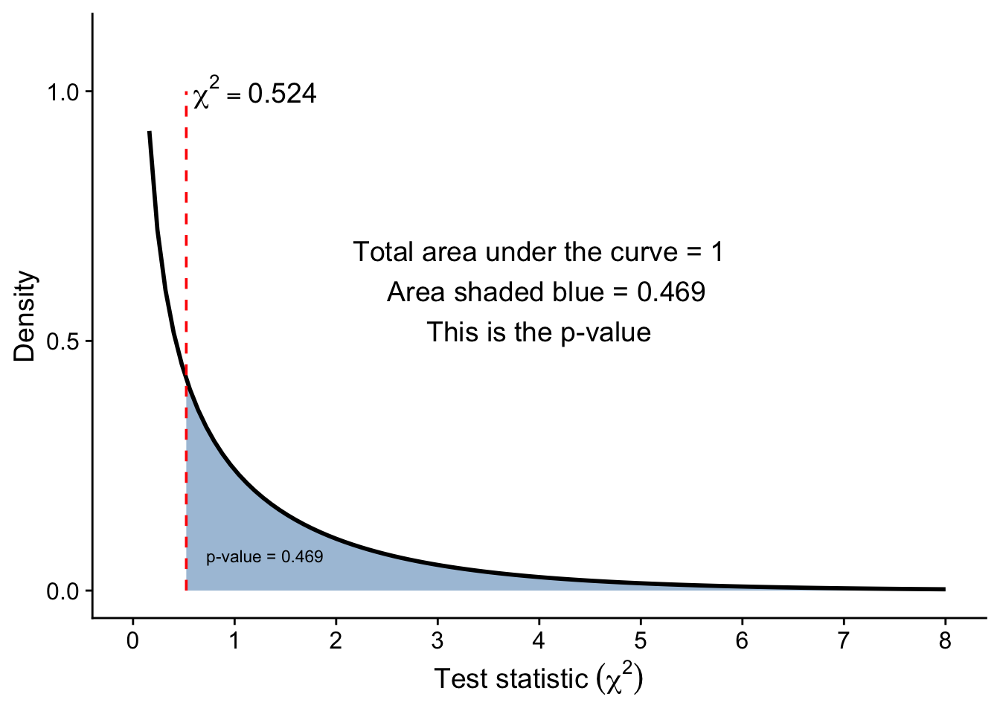

6 Hardy-Weinberg example two: Eider ducks
We assume here that you have already followed the previous exercise on hedgehog spine colouration.
An iconic study by Milne and Robertson (1965) used protein electrophoresis to show that a population of Eider ducks (Somateria mollissima) around the Ythan estuary of north-east Scotland has two codominant alleles of a gene that codes for egg-white protein. One variant of the protein migrates quickly through the gel used in the electrophoresis and one migrates slowly. In the following, we use F to denote the allele that codes for the fast protein and S for the one that codes for the slow.
By studying the frequencies of these alleles and comparing the results with the expectations under Hardy-Weinberg (HW) equilibrium, they could establish whether this population of Eiders met the assumptions of HW - large population, random mating, no mutation, no natural selection, no gene flow in or out of the population.
They studied 67 individual ducks and found
| Genotype | Phenotype | Observed Count |
|---|---|---|
| FF | Fast moving ovalbumin variant synthesised | 37 |
| FS | Fast and slow moving ovalbumin variant synthesised | 24 |
| SS | Slow moving ovalbumin variant synthesised | 6 |
Is this population of ducks in Hardy-Weinberg equlibrium? To answer that, we need to find out what counts would be expected under Hardy-Weinberg equilibrium, based on the probabilities that any individual would have any one of the three possible genotypes.
6.1 Calculation of frequencies of F and S alleles.
Let us use p to denote the frequency of the F allele and q to denote the frequency of the S allele.
Frequency
In this context, ‘frequency’ means proportion. So, if an allele of a gene had a frequency of 0.64 that would mean that 64% of the alleles of that gene were of that type. When there are two alleles of a gene, their frequencies are commonly referred to as p and q, with p usually denoting the dominant allele, if there is one. The frequencies of all the alleles of a gene must add up to one.
We know
\[ \begin{align*} p&=\frac{\text{Total number of F alleles}}{\text{Total number of alleles}}\\ &=\frac{2 FF + FS}{2N}\\ &=\frac{2\times 37 + 24}{2\times 67}\\ &=\frac{98}{134}\\ &=0.7313 \end{align*} \]
We know that \(q = p-1 = 0.2687\), but let’s caclulate it here from first principles just as we did for p, as a check on our arithmetic:
\[ \begin{align*} q&=\frac{\text{Total number of S alleles}}{\text{Total number of alleles}}\\ &=\frac{2 SS + FS}{2N}\\ &=\frac{2\times 6 + 24}{2\times 67}\\ &=\frac{36}{134}\\ &=0.2687 \end{align*} \]
Note that \(p + q = 1\), as they must. There are two alleles, so their respective proportions must add up to one.
6.2 Calculate expected number of each genotype under H-W
| Genotype | Expected frequency | Expected count E | ||||
|---|---|---|---|---|---|---|
| FF | p2 | = 0.7313 x 0.7313 | = 0.5349 | N x p2 | = 67 x 0.5349 | = 35.84 |
| FS | 2 pq | = 2 x 0.7313 x 0.2687 | = 0.3930 | N x 2 pq | = 67 x 0.3930 | = 26.33 |
| SS | q2 | = 0.2687 x 0.2687 | = 0.07218 | N x q2 | = 67 x 0.07218 | = 4.84 |
Note that \(p^2 + 2pq + q^2 = 1\), as must also be the case. There are three genotypes, so their respective proportions under HW (or any other scenario) must add up to 1.
6.3 Compare observed and expected numbers
| Genotype | Observed count | Expected count |
|---|---|---|
| FF. | 37 | 35.84 |
| FS. | 24 | 26.33 |
| SS. | 6. | 4.84. |
These look very similar. It looks as though the duck population is in Hardy-Weinberg equilibrium. To check, we carry out a Chi-square goodness of fit test, with one degree of freedom
# observed counts
observed <- c(AA = 37, Aa = 24, aa = 6)
N <- sum(observed)
# allele frequencies
p <- (2 * observed["AA"] + observed["Aa"]) / (2 * N)
q <- 1 - pAllele Frequencies:p (F allele) = 0.7313q (S allele) = 0.2687p + q = 1.0000# Expected genotype frequencies under HW
expected_frequencies <- c(p^2, 2 * p * q, q^2)Expected genotype Frequencies:p^2 (FF genotype) = 0.53492pq (FS genotype) = 0.3930q^2 (SS genotype) = 0.0722p^2 + 2pq + q^2 = 1.0000# expected counts
expected <- N * c(p^2, 2 * p * q, q^2)Observed counts: 37 24 6Expected counts: 35.84 26.33 4.84# calculate chi-squared (X2 )statistic
X2 <- sum((observed - expected)^2 / expected)χ² statistic: 0.5240# calculate p-value
p_value <- pchisq(X2, df = 1, lower.tail = FALSE)p-value: 0.4691Figure 6.2 shows what this results looks like:

6.4 Conclusion
The Chi-square goodness of fit test gives a p-value of 0.469. This is much greater than 0.05, so we do not reject the null hypothesis, which is that the duck population is in Hardy-Weinberg equilibrium. We would normally expect this for any large outbreeding population. if mutation or natural selection are occurring (they must be, at some pace or other) then their effects must be small.
Milne, Henry, and Forbes W. Robertson. 1965. “Polymorphisms in Egg Albumen Protein and Behaviour in the Eider Duck.” Nature 205: 367–69.